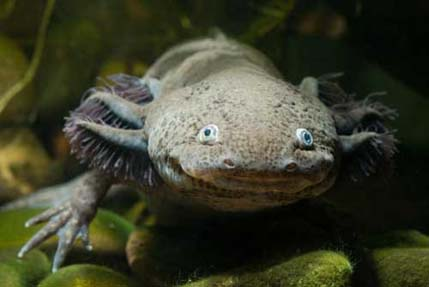

Max Mudpuppy, sworn enemy of all axolotls, has kidnapped a number of sea creatures. Fortunately, Max Mudpuppy learned his evildoing from children's cartoons, and so has a weakness common among antogonists of young children's shows: If you can successfully answer a riddle, he'll let you go!
Can you save the sea?